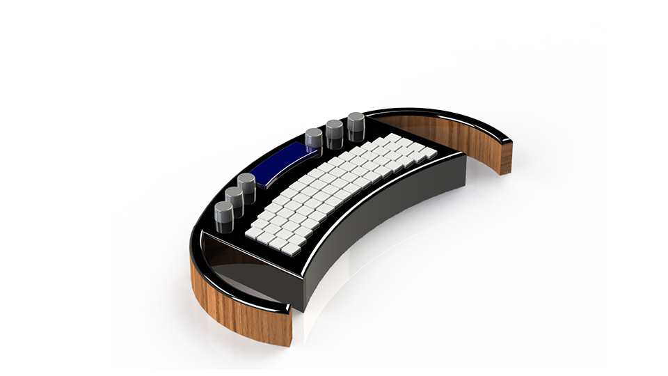
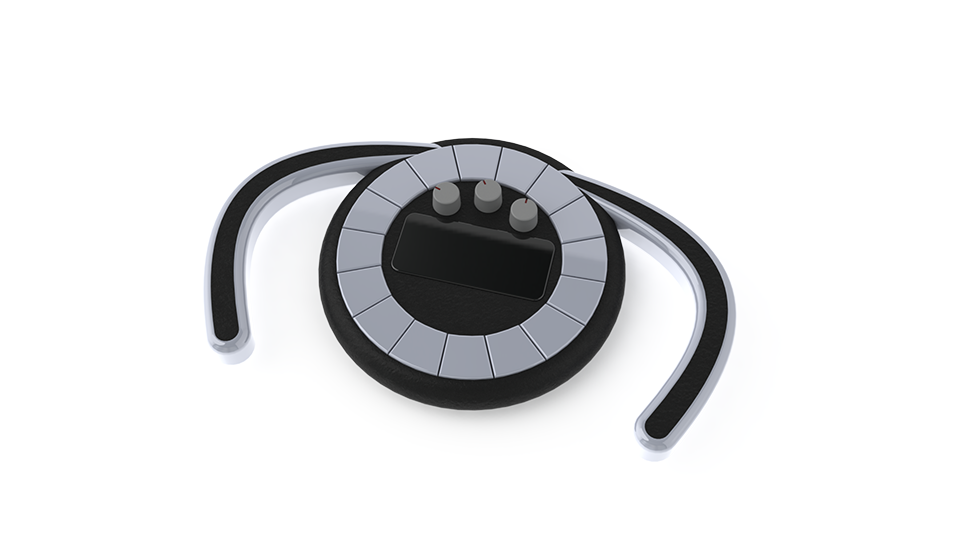
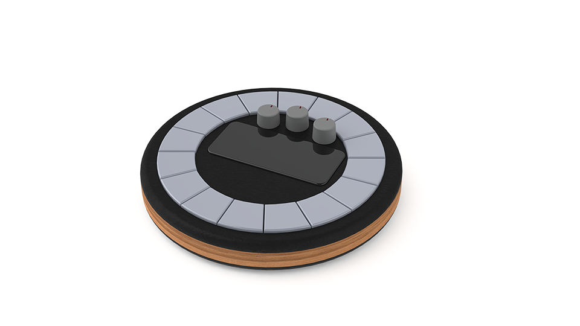
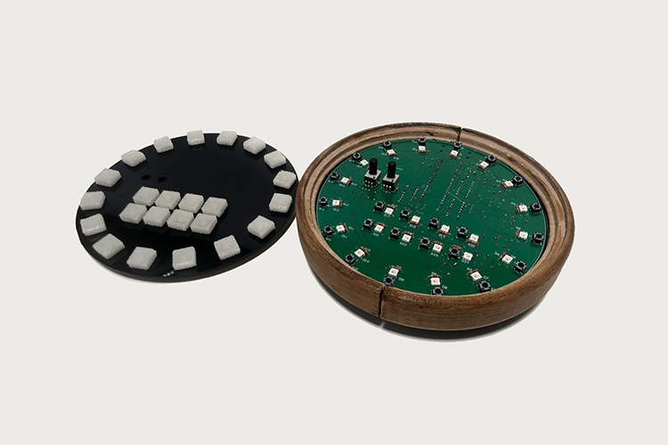
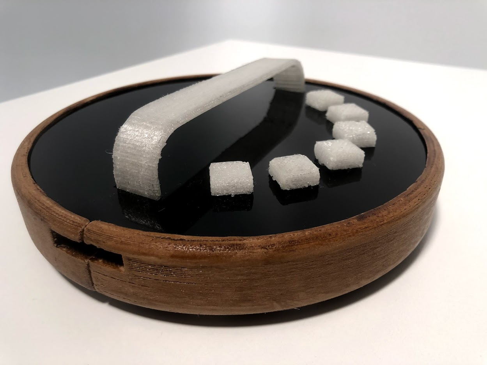
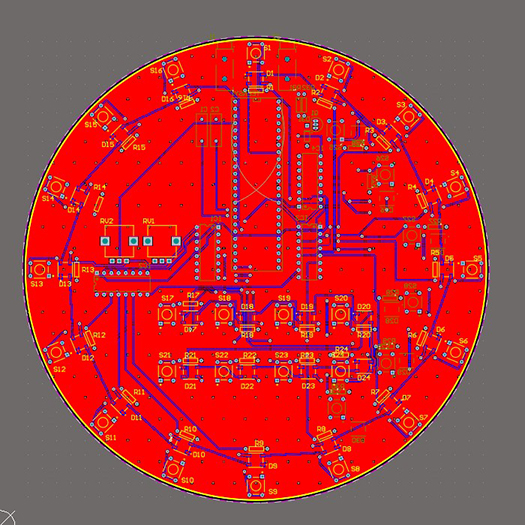

Industrial Design Capstone
A conceptual product designed to expand Synthstroms offering
Project Details / Background
With the global pandemic forcing many people indoors, a lot of consumers have been turning their attention to entertainment. The market has seen an exponential growth in the sales of Audio and Video products, due to Covid 19, Synthstrom has positioned itself well at the forefront of a niche audio market and with this proposed product this niche could be expanded. The Delta project aims to build on the values of the Synthstrom foundation and leverage this opportunity by creating a less cost prohibitive offering that builds on Synthstrom’s core values of education, innovation, and community. This will strengthen the brand identity, provide exposure, and in the long run translate to more units sold of the core product the Deluge. While not isolating those, who may not initially be able to afford the $1400 price tag, especially in times of economic downturn.
Though traditionally post-industrial design suggests that most secondary sector manufacturing is done overseas, Synthstrom has seen success manufacturing in New Zealand. This indicates a possible path for the Delta, but I believe it is important to also consider the application of 3D printing and the DIY/modular nature from which Synthstrom was born. The possibility of a DIY product is partially appealing, as it adds another level to the education aspect of the product. 3D printing the exterior and allowing the consumer to select their preferred interactive technology, such as a drum machine or synth. Allowing for a personalised modular product. This could also further reduce the barrier to entry of the Delta, especially in a time where supply chains are uncertain, a system in which the user is tasked with sourcing components, could be beneficial, educational, and personalised. Decentralising the manufacturing of this offering seems preferable considering the current circumstances but both manufacturing options have their own advantages that will require further investigation.
Revenue for the Delta could be generated through licensing of the schematics, parts list, instructions, 3D print files and software if local manufacturing is not viable. Synthstrom began as a DIY passion project of Rohan Hill but has since flourished into an international brand with a niche offering. The goal of the Delta is to give people a similar position, allowing them to learn and entertain themselves from home. Educating them on electronics, additive manufacturing, music theory and providing the consumer with a creative outlet. The Delta Project will reduce Synthstrom’s barrier to entry while simultaneously elevating the intrinsic value of the brand, accentuating the values of Education, Innovation, and Community, solidifying their position in the market as a boutique, socially conscious, community orientated audio technology manufacturer
Image Gallery





